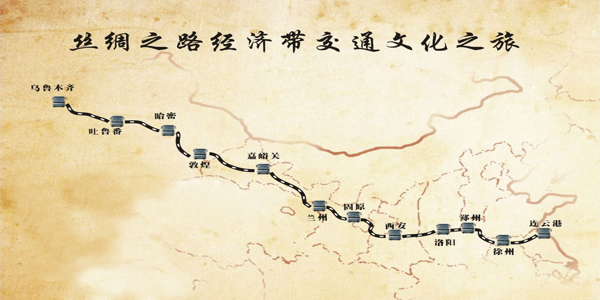

丝路重生
作者：Cindy 日期：2017-5-16
nbsp2013年9月7日，国家主席习近平在哈萨克斯坦纳扎尔巴耶夫大学发表题为《弘扬人民友谊 共创美好未来》的重要演讲，盛赞中哈传统友好，全面阐述中国对中亚国家睦邻友好合作政策，倡议用创新的合作模式，共同建设“丝绸之路经济带”，将其作为一项造福沿途各国人民的大事业。
为配合中国政府的国家战略，2014年国家级媒体共举行了七次大规模的采访报道活动：
2014年05月21日，中华人民共和国国务院新闻办公室组织“中国媒体丝路行”采访活动在丝绸之路起点西安启程。
2014年06月08日，新华社“新丝路·新梦想”采访车队在丝绸之路起点西安启程。
2014年07月13日，中国人民政治协商会议“重走丝绸之路”大型采风报道活动在在丝绸之路起点西安启动。
2014年07月13日，光明日报、陕西卫视“丝绸之路万里行”采访团在丝绸之路起点西安出发。
2014年08月04日，中华人民共和国外交部“外交官重走丝绸之路”活动在丝绸之路起点西安成功举办。
2014年08月18日，人民网“行走新丝路”大型跨国全媒体报道在丝绸之路起点西安正式启动。
2014年09月12日，国家互联网信息办公室全国“网络名人丝路行”在丝绸之路起点西安启动。